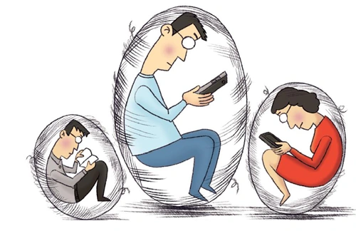

警惕网络「信息茧房」效应
作者：王妍 - 人民论坛
「信息茧房」效应是指在网络信息传播中，用户更倾向于关注自己原本就感兴趣的领域，更乐于与志同道合的人开展交流，但久而久之却被局限在「人造孤岛」当中，就如同蚕蛹一般，始终被「茧房」束缚，不愿面对外部的世界和生活。「信息茧房」效应是指在网络信息传播中，用户更倾向于关注自己原本就感兴趣的领域，更乐于与志同道合的人开展交流，但久而久之却被局限在「人造孤岛」当中，就如同蚕蛹一般，始终被「茧房」束缚，不愿面对外部的世界和生活。对于「信息茧房」效应应当认真分析，破解「信息茧房」效应对社会和用户等的不良影响，推动多元化、全面化、综合性发展。

「信息茧房」效应的不良影响
「信息茧房」效应容易局限个人视野、加重群体极化、淡化社会黏性，存在一定危害与不良影响
局限个人视野。在「信息茧房」效应下，用户只关注自己熟悉的领域，并持续、反复加深兴趣爱好，形成一个坚固的「回音室」，势必会导致视野局限，降低独立思考的能力，更无法形成大局观，常见现象就是过度关注娱乐信息，而忽视周围其他类型信息，对时事政治、社会热点毫不了解，严重者开始与时代脱轨。
群体极化严重。由于「信息茧房」中全部是同类同质群体，信息传播及认同度极高。但事实上，这种认同并非理性认同，一旦打破「茧房」，用户接触到外部不同声音，会产生极强的不适应性，导致用户强烈反弹，进而滋生群体极化现象。比如，粉丝群无法接受外部反对偶像的声音，集中开展网络暴力行为。
社会黏性下降。任何用户都无法始终处于「舒适圈」，总要接触外部信息和事务。但如果用户受「信息茧房」效应影响严重，就会变得孤立、狭隘，总是逃避现实社会和生活，更无法与其他群体和谐相处，既影响个人健康成长，又不利于社会团结。因此，「信息茧房」看似顺应时代潮流，强调个性化发展，实则过于注重自我认同，对个人成长、群体发展、社会和谐都具有严重危害。
「信息茧房」效应的产生
「信息茧房」效应的产生受多种因素影响，媒体无序竞争、现代化网络技术推动、用户局限于自身需求等是主要原因
媒体竞争奠定「信息茧房」基调。在过去，媒体在信息传播中占据主导地位，由媒体决定受众观看内容。但是随着现代网络发展，各类媒体犹如雨后春笋，媒体之间竞争日益激烈，媒体与受众地位发生转变，由受众决定媒体生产内容。面对严峻的竞争形势，如何满足用户需求，赢得用户青睐，成为媒体考量的重点。显然，以用户兴趣为基准，利用投其所好的方式，制造生产与用户需求相应的内容才能维系生存，定制化、精准化服务相继展开，奠定了「信息茧房」的基调。
技术创新加速「信息茧房」发展。满足用户需求，实现精准信息推送需要依赖现代化网络技术，而大数据、云计算等现代技术不断成熟，为精准服务提供可能。大数据、云计算等以体积大、品种广、价值密度低、处理速度快等优势，在获取用户数据样本后，在短时间内解析数据，根据用户的习惯实现精准推送，满足用户的阅读喜好。网络媒体不仅鼓励用户自主订阅、选择阅读内容，也会根据用户浏览数据，判断用户偏好，甚至不惜制造虚假信息、低俗内容来满足用户的订阅需求。现代化网络技术无疑成为「信息茧房」效应形成的加速器。
用户需求决定「信息茧房」形成。俗话说「物以类聚、人以群分」，每个人都有自己热爱的领域，并倾向于关注和喜爱符合自己兴趣和观点的内容。在用户强大趋同心理作用下，媒体为迎合用户需求，鼓励用户选择兴趣领域，甚至允许用户自行创造内容，让用户获得更多阅读喜悦。由此，QQ 群、微信群、公众号、贴吧等都以用户兴趣作为划分依据。用户也乐于融入自己的网络圈子，将注意力放在自己想要了解、具有兴趣的领域，屏蔽掉自己不喜欢或认为不重要的信息，最大限度满足自身期望，在志趣相同的圈子内展开讨论。用户自身的需求最终决定了「信息茧房」效应的形成。
破解「信息茧房」效应
加强媒体行业自律和监管、优化信息推荐机制、提升用户媒介素养，多措并举破解「信息茧房」效应
加强媒体行业自律和监管，强化媒体社会责任。「信息茧房」形成与媒体经营管理行为密不可分。但与一般企业性质不同，媒体具有「社会公器」作用，倘若一味关注经济利益，片面传播信息容易引发舆论导向偏差，违背新闻媒体行业原则。新闻媒体应承担起更多社会责任，不能一味讨好用户推送定制化内容，甚至「添油加醋」，利用用户的兴趣，将低俗内容、广告内容进行「标题式」包装，吸引用户点击，从而获取经济利益。新闻媒体要做到「个性化」推荐与「人性化」推荐兼顾，既要顺应用户需求，向用户推送「个性化」内容，比如娱乐明星、体育资讯，也要同步推送「人性化」内容，比如党政时事、社会热点、法治宣传等，两者要相互协调。同时，在当今社会背景下，媒体数量众多，质量上更是良莠不齐，依靠媒体自律显然无法根治「信息茧房」效应，甚至会出现「劣币驱逐良币」现象。相关管理部门及行业协会应充分发挥监督职责，使新闻媒体优化信息推送方式，防止新闻媒体以用户定制为借口，将低俗内容、虚假信息等内容推荐给用户。同时，媒体平台必须对推荐内容负责，一旦违反国家法律法规和行业规章，轻则停业整改，重则依法承担责任，永久禁止进入新闻媒体行业。
优化信息推荐机制，鼓励创作优质内容。大数据、云计算等现代化网络技术是「信息茧房」效应的助推器，破除「信息茧房」效应也应从人工智能技术入手。通过完善技术，提升信息推荐种类，逐步引导用户关注多元信息。人工智能技术信息推荐，应从片面抓取朝着全面预测方向发展，拒绝以关键词标签化用户，而是要通过全面的数据分析，预测和模拟用户行为习惯，多元化、全面化进行信息推送。以订阅篮球信息为例，在信息推送上不要单一推送篮球信息，而是要开展用户其他方面信息需求预测，附加推送如教育类信息、网络技术信息等其他信息，在得到用户认可之后，再继续进行其他方向预测，帮助用户获取到更加多元、更为有益的信息。同时，随着自媒体逐渐兴起，信息源头更加多元化，由于用户已经产生浏览感兴趣的信息习惯，想要打破这种习惯，必须提高信息内容质量，以质量提升博取用户关注。网络平台应创设奖惩机制，通过丰富的奖励吸引作者创造优质内容，激发潜在群体的阅读兴趣，让用户逐渐走出「茧房」，乐于关注和订阅更加多元、更加丰富的信息内容。
提升用户媒介素养，鼓励用户探索未知。虽然媒体环境、现代技术是「信息茧房」效应的助推器，但「信息茧房」效应形成根源还在于用户自身。为满足兴趣需求与心理认同，多数用户选择并乐于待在「茧房」，尚未意识到「信息茧房」对个人成长产生的弊端。政府、社会、媒体有责任、有义务帮助用户走出「茧房」。一是应着力宣传「信息茧房」行为、后果及产生的危害，鼓励用户探索未知领域，将单一兴趣逐渐发展成为多元爱好。当用户能够认识到「信息茧房」效应危害，会逐渐产生「破茧」心理。二是「信息茧房」效应影响群体众多，其根源在于用户媒介素养有限，或因懒惰、能力不足等因素不愿走出「舒适圈」，社会和媒体应逐步采取引导措施。要加强用户获得、分析、辨别信息内容的能力，帮助用户逐渐理解和接受不同的外界声音，使其敢于直面和辨析不同观点，能够冷静、理性进行思考问题，避免过度沉溺于网络世界，而忽视现实社会交往。此外，媒体也要为用户创造良好的媒介环境，屏蔽和抵制偏激的观念和非理性言论，致力于构建和谐有序的网络空间。